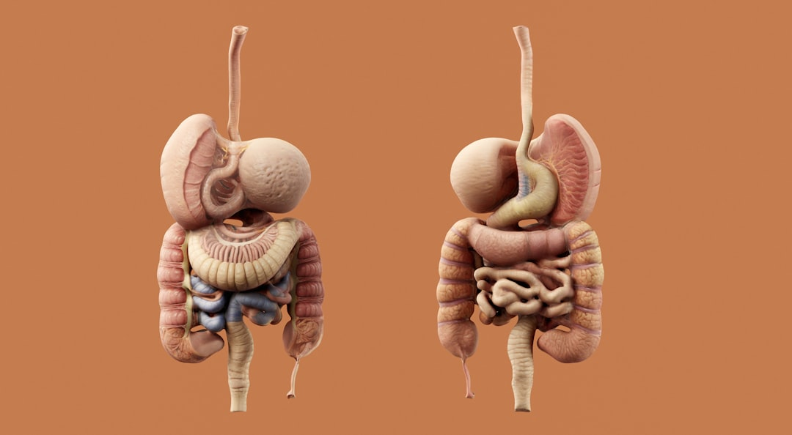

If you find yourself experiencing diarrhea while staying in Bangkok, it's important to know how to manage the condition and when to seek medical help. Diarrhea, particularly in a new environment like Bangkok, can be distressing and can quickly ruin your trip. However, with prompt and appropriate care, you can recover swiftly and continue enjoying your stay.
Severe or persistent diarrhea can quickly lead to dehydration and worsening symptoms if left untreated, so timely care matters. For anyone in the city looking for Urgent care diarrhea Bangkok with walk-in availability, rapid assessment, and treatment to help you recover quickly..
Diarrhea is characterized by loose, watery stools occurring more frequently than your normal pattern. This condition can be caused by a variety of factors including foodborne bacteria, viruses, or even parasitesâcommon culprits in a traveler's diarrhea. The change in diet or water sources during travel also plays a significant role.
Rapid loss of fluids and electrolytes can lead to dehydration, which is a major concern with diarrhea, especially in Bangkok's tropical climate. Dehydration can manifest through symptoms like excessive thirst, reduced urination, dry skin, and dizziness. In severe cases, it may require urgent medical attention to prevent more serious complications.
Stay Hydrated: Begin by consuming plenty of fluids. Oral rehydration solutions (ORS) are ideal as they contain precise amounts of salts and sugars to replenish lost electrolytes. Avoid caffeine and alcohol as they can worsen dehydration.
Diet Adjustments: Stick to bland, easy-to-digest foods such as rice, banana, toast, and soup. These can help solidify stools and ease digestion.
Over-the-Counter Medications: Medications like loperamide can reduce diarrhea's frequency but are not always recommended as they might prevent your body from flushing out toxins causing the infection.
Visit a healthcare provider if your diarrhea is persistent, severe, or accompanied by symptoms like high fever, blood in stools, or severe abdominal pain. For tourists and expats, Doctor Bangkok offers comprehensive care including same-day medical treatment for acute cases of diarrhea. Our English-speaking staff ensures that language barriers do not impede the quality of your care.
Understanding that traveling to a clinic might be inconvenient or uncomfortable when you're unwell, Doctor Bangkok provides doctor hotel visits. This service allows you to receive professional medical care directly in your hotel room, ensuring privacy and comfort while addressing your health concerns promptly.
To minimize the risk of developing diarrhea while in Bangkok, be cautious with your dietary choices. Opt for well-cooked foods, avoid raw vegetables and fruits that you can't peel, and always drink bottled or purified water.
Diarrhea can often be managed effectively with hydration and rest, but it should not be taken lightly, especially when traveling. By recognizing the symptoms early and understanding when to seek medical help, you can ensure your health is not compromised during your stay in Bangkok. For reliable and swift medical attention, remember that Doctor Bangkok is ready to assist, whether at our clinic or through a convenient hotel visit, ensuring your health and comfort are prioritarily addressed.